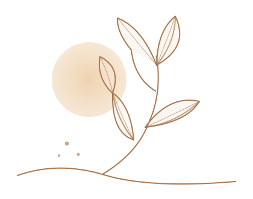

Ein Stück
meiner Heimat.
Von der Natur inspiriert.
Mit Liebe gemacht.
Ich bin Gintarė, die Gründerin von Gint Art. Meine Wurzeln liegen in Litauen, wo ich an der Ostsee aufgewachsen bin. Die Nähe zur Natur, zum Meer und zu natürlichen Materialien prägt mich bis heute und inspiriert meine Kreationen.
MEHR ENTDECKENNatürliche
Inspiration.
Bei Gint Art verbinde ich natürliche Materialien, Fundstücke und kreative Ideen zu handgemachten Einzelstücken. Inspiriert von meiner Heimat, der Natur und der Schönheit im Einfachen.
Meine Kreationen verändern sich mit neuen Ideen und Materialien. Jedes Stück hat seinen eigenen Charakter und ist nur einmal erhältlich.
Jedes Stück ein Unikat.
ONLINE · GALERIE
In der Galerie findest du meine aktuell verfügbaren Einzelstücke. Wenn dir etwas gefällt, schreib mir einfach mit der entsprechenden Nummer.
GALERIE ANSEHEN ↗VOR ORT · ZÜRICH HÖNGG
Eine Auswahl meiner handgemachten Stücke findest du in meiner kleinen Vitrine in Zürich Höngg.
Giblenstrasse 88049 Zürich Höngg
Aktuelle Einzelstücke.
Jedes Stück ein Unikat.
Eine kleine Auswahl meiner aktuell verfügbaren Kreationen. Jedes Stück gibt es nur einmal.
Ein Stück entdeckt, das dir gefällt?
Schreib mir einfach mit der entsprechenden Nummer – ich freue mich auf deine Nachricht.
ANFRAGE SENDEN ↗
Schreib mir gerne.
Wenn dich ein Stück interessiert oder du Fragen hast, freue ich mich auf deine Nachricht. Bitte gib bei Anfragen zur Galerie die Nummer des Stücks an.